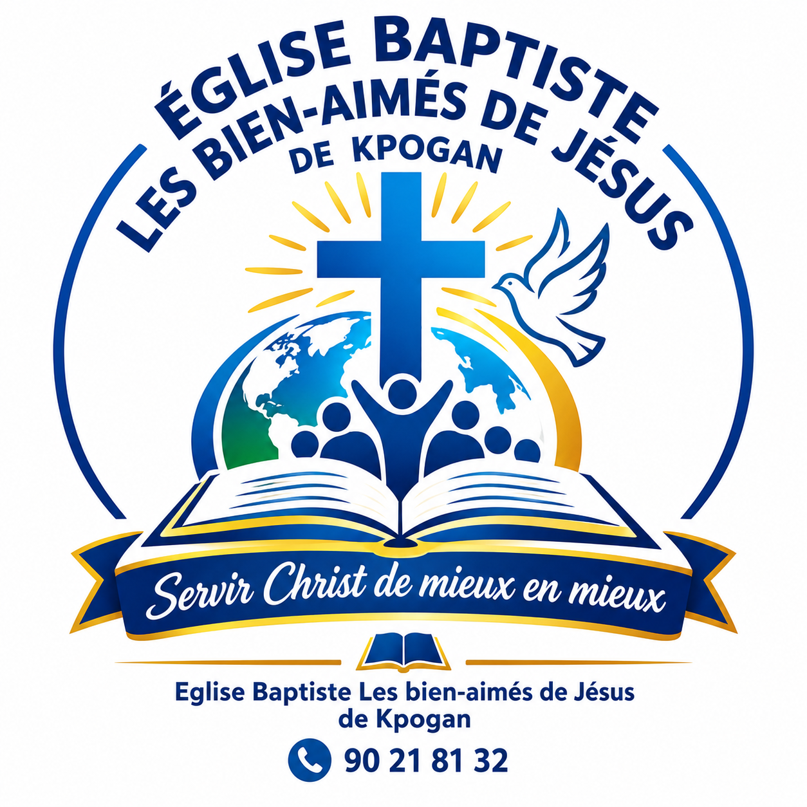

Repentance & Baptême
JEAN 3.1-8La repentance à Christ et le baptême par immersion.

ÉGLISE BAPTISTELES BIEN-AIMÉS DE JÉSUS · KPOGANCONVENTION BAPTISTE DU TOGO · ZONE AGAPÉ
BIENVENUE À
de Kpogan, Togo
« Servir Christ de mieux en mieux »
NOTRE VISION
Devenir une église Baptiste forte, biblique, missionnaire, mobilisant des ressources endogènes et exogènes — humaines et financières — pour un impact holistique (spirituel, social, politique, économique…) de la société togolaise.
Aimer Dieu
Mettre Dieu au centre de tout — notre adoration, nos décisions, notre vie entière.
Aimer le prochain
Servir notre communauté avec compassion, justice et générosité au nom de Christ.
Faire des disciples
Transformer l'Église par le discipulat et équiper chaque membre pour la mission.

NOTRE MISSION

CE EN QUOI NOUS CROYONS
La repentance à Christ et le baptême par immersion.
La sanctification et la fidélité en toutes choses.
La plénitude du Saint-Esprit manifestée par son fruit.
La foi et la vie de prière comme piliers fondamentaux.
La générosité et la libéralité envers Dieu et le prochain.
L'humilité et le pardon réciproque comme témoignage.
L'amour en action et l'espérance qui ne déçoit pas.
POURQUOI NOUS EXISTONS
Célébrer la présence de Dieu dans nos cultes et notre vie quotidienne.
Communiquer la Parole par l'évangélisation dans tout Kpogan et ses environs.
Intégrer la famille de Dieu par une communion fraternelle authentique.
Enseigner le peuple de Dieu vers la maturité par le discipulat.
Démontrer l'amour de Dieu par un ministère de service concret.
VENEZ NOUS REJOINDRE
18h30 – 20h00Étude Biblique
18h30 – 20h00Prière
Tous les 3e VendrediVeillée de Prière
7h30 – 8h15École du Dimanche
8h30 – 10h30Culte
SOUTENIR L'ÉGLISE — VOS DONS
Votre générosité contribue à soutenir la mission de l'Église, ses ministères et son action auprès de la communauté.
« Que chacun donne comme il l'a résolu en son cœur, sans tristesse ni contrainte. » — 2 Cor 9.7
NOUS TROUVER
ADRESSE
Village de Kpogan, Togo
Derrière l'École Sainte-Catherine,
non loin de Motévétcha.
TÉLÉPHONE
+228 90 21 81 32
+228 99 82 07 42
EMAIL
egbbaj@gmail.com